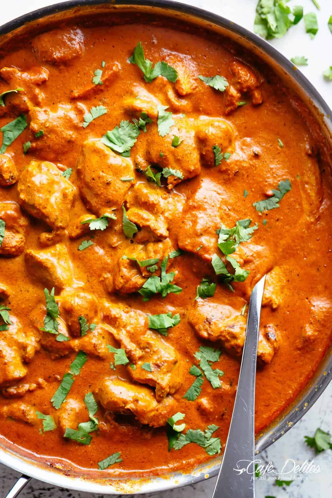

Chicken Tikka Masala Recipe

Description
This rich and creamy flavoursome Chicken tikka
rivals any Indian restaurant! Why go out when you can make it better
at home! With aromatic golden chicken pieces swimming in an incredible curry
sauce, this Chicken Tikka Masala recipe is one of the best you will try!
Pair it with our buttery garlic naan breads!
The BEST part about this recipe and just like our Butter Chicken
— you may already have these ingredients in your kitchen.
If not, they are so easy to find in any grocery store, you won’t need to go
searching high and low to find them! Authentic Chicken Tikka Masala is usually
made with yogurt marinated chicken, skewered and chargrilled for incredible bbq
flavours. For the sake of making this recipe much easier for us to make at
home, we are using a skillet or pot to cook it all in, while still keeping those
amazing flavours.
Ingredients
For Chicken Marinade:
- 28 oz (800g) boneless and skinless chicken thighs cut into bite-sized pieces
- 1 cup plain yogurt
- 1 1/2 tablespoons minced garlic
- 1 tablespoon ginger
- 2 teaspoons garam masala
- 1 teaspoon turmeric
- 1 teaspoon ground cumin
- 1 teaspoon Kashmiri chili (or 1/2 teaspoon ground red chili powder)
- 1 teaspoon of salt
For Sauce
- 2 tablespoons of vegetable/canola oil
- 2 tablespoons butter
- 2 small onions (or 1 large onion) finely diced
- 1 1/2 tablespoons garlic finely grated
- 1 tablespoon ginger finely grated
- 1 1/2 teaspoons garam masala
- 1 1/2 teaspoons ground cumin
- 1 teaspoon turmeric powder
- 1 teaspoon ground coriander
- 14 oz (400g) tomato puree (tomato sauce/Passata)
- 1 teaspoon Kashmiri chili (optional for colour and flavour)
- 1 teaspoon ground red chili powder (adjust to your taste preference)
- 1 teaspoon salt
- 1 1/4 cups of heavy or thickened cream (use evaporated milk for lower calories)
- 1 teaspoon brown sugar
- 1/4 cup water if needed
- 4 tablespoons Fresh cilantro or coriander to garnish